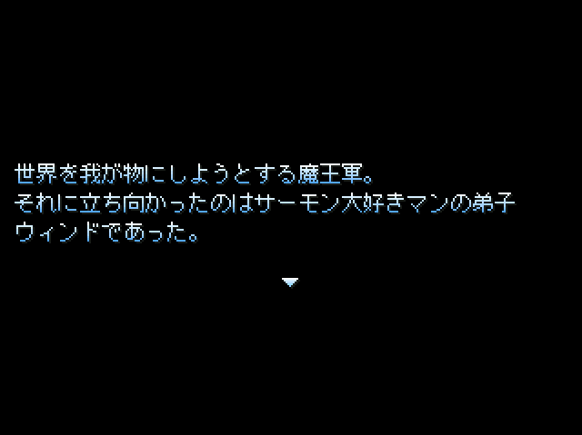

保存資料：2019-01-29の公開ページを再生しています。原HTMLと画像の載荷は保存済みです。
 |
|
| 作者：ジャスティス | |
| ツクール：2000 | |
| ジャンル：ｋｓｇ | |
| 配信/投稿：可 | |
| 作者コメント： バレンタインに投下したｋｓｇ「やみっちライチのラブラブ★ばれんたいん」の続編でございます。 今から作ります。 ぶっちゃけこの時点で、「いや、タイトルとゲームの内容関係なーい！」的な このゲーム最大のインパクトがなくなってしまいましたが、なんとか他の要素でがんばります。 |
|
| 管理人コメント： ついにポピャブッチャフォー喫茶の謎が明らかに……！？ |
|
| ダウンロード(4.2MB) / 感想掲示板 | |
| 前の作品 / 次の作品 / TOPへ戻る | |